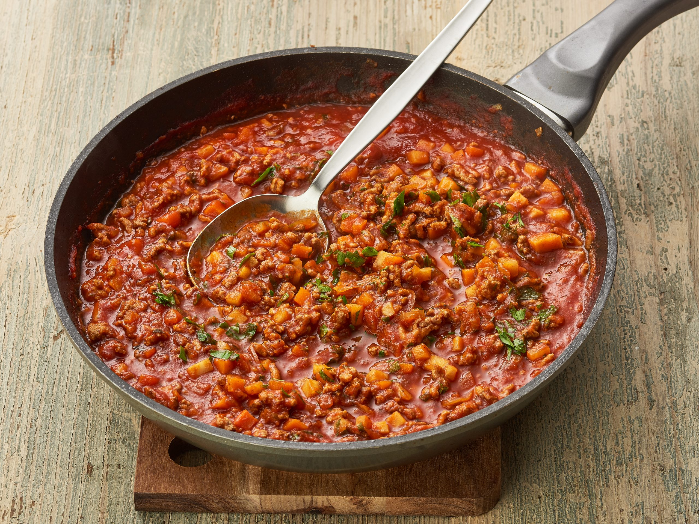

Meat Sauce

Description
A tomato based meat sauce that can be used with spaghetti or lasagna.
Ingredients
- Ground Beef
- Onion
- Garlic
- Bell Pepper
- Can of tomato
- Oregano
- Bay leaf
- Salt and Pepper to taste
Steps
- Dice veggies
- Brown ground beef in saute pan
- Add vegetables to beef and cook until soft
- Add seasonings and cook for a few minutes
- Add canned tomato and cook for 30 mintes on medium low stirring occasionally
Home